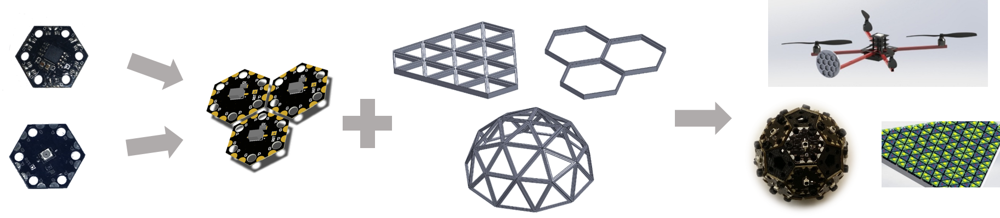
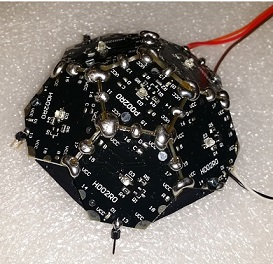
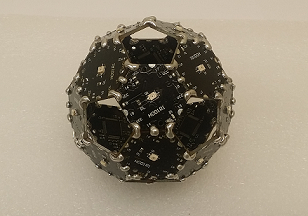

Modular Optical Wireless Elements
This project has been created by Asaad Kaadan at the University of Oklahoma (OU) as part of his phd research on mobile free-space optics (FSO) and optical wireless communications under supervision of Dr. Hazem Refai (University of Oklahoma) and Dr. Peter LoPresti (University of Tulsa). We'll try to post most, if not all, materials related to this project online as open-source content, including hardware schematics, MCU firmware, and software development tools.
MOWE Concept
The Modular Optical Wireless Elements (MOWE) system consists of smart, electrically interconnected optical modules that can be combined together to build flat and curved optical wireless arrays. This novel design offers lightweight, inexpensive, and wide field-of-view terminals for various applications ranging from user tracking and noise measurements to broadband connectivity and MIMO FSO.
A single array is composed of multiple modules soldered side-by-side to form a single, continuous flat or curved surface that could be structurally supported by a 3D-printed plastic frame. The array, frame and a central controller with wired or wireless interface constitute a complete optical terminal. The MOWE concept is depicted below.
 From left to right: Individual modules are assembled into array. Arrays are fitted with structural 3D-printed frames. Arrays and frames make a complete terminal that can be used in various applications, e.g., on board a multirotor UAV.
MOWE Hardware
Each module is a single optical point (either transmitter, receiver or transceiver). Modules have specific geometric shapes (e.g., hexagons and pentagons) and feature an optical front-end on the top side (LED, VCSEL or PD) and a 32-bit ARM Cortex-M0 MCU on the bottom. The optical modules are free from connectors, wires, cables, and any other assemblies, rendering them as small and lightweight as possible. Edge pcb connectors are used for physical and electrical connections making the array lightweight, reliable and easy-to-assemble.
More about MOWE hardware and specifications can be found here.
Flexible & User-friendly
All modules run a custom-designed operating system called Array Operating System (AOS) that handles user interactions, inter-array communications, and array housekeeping functionality (e.g., cross-array routing, module labeling and identification, broadcast commands, firmware upgrades, and others).
A regular user can interact with the array via the command line parser (CLP) utility within the AOS. The CLP can be accessed via any port in any module and features various intuitive control commands in a plain English language. Some commands are used to setup the array, ping the modules, rename them, and group them; other commands read samples from receiver modules and stream data in/out the modules at various speeds. More advanced commands are also available to update modules firmware on the fly, setup inter-array DMA streams, link two modules, and send a predefined signal out a transmitter module among others. These intuitive commands make the MOWE system easily accessible by any student/researcher regardless if he or she has hardware or Embedded Systems development expertise.
Experienced users, on the other hand, can further leverage the system by writing their own firmware in C language or modifying the AOS and other available firmware implementations to suit their exact application.
Development Tools
We are working on a couple of software tools to aid in developing MOWE terminals, especially large, complex designs.
MOWE-Tandy Simulator: The guys at the Tandy Supercomputing Center are working on a multi-agent, MPI-based simulator for MOWE that can be run locally or on their supercomputer. The simulator will be very handy to test how certain algorithms scale up to hundreds or even thousands of modules, such as those expected in massive MIMO applications. (wiki)
MOWE Automatic Topology Generator (ATG): The ATG is a MATLAB tool to graphically design a MOWE array and automatically generate all required configuration and topology files, saving developers a lot of tedious, error-prone work. (code|wiki)
Possible Applications
- Short- and medium-range fixed FSO links.
- Short- and medium-range mobile FSO (air-to-air, air-to-ground, and ground-to-ground).
- Infrared and visible light communications (VLC).
- Indoor optical wireless communications.
- Broadband optical communications and LiFi.
- Last-mile FSO technology.
- User tracking and 3D localization.
- Multi-input-multi-output (MIMO) optical antennas.
- Testbeds for spatial and wavelength diversity.
- Testbeds for optical wireless networks.
- Optical relays and switches.
- Background noise measurement and estimation.
- Optical channel modeling and estimation.
- Optical radar and remote optical sensing.
- Distributed sensing, estimation and control.
- Distributed computing systems.
- Educational platforms and lab experiments for the topics listed above.
- ...
Research Papers
MOWE
- Kaadan, A.; Refai, H.H.; LoPresti, P.G., "On the Development of Modular Optical Wireless Elements (MOWE)," Sixth Workshop on Optical Wireless Communications, IEEE Globecom 2015 (in print).
Optical Arrays
- Kaadan, A.; Refai, H.H.; LoPresti, P.G., "On the Coverage of Spherical Receiver Arrays for Mobile Free-space Optical Communication," submitted to IEEE Transactions on Aerospace and Electronics Systems for review.
- Kaadan, A.; Refai, H.H.; LoPresti, P.G., "Multielement FSO Transceivers Alignment for Inter-UAV Communications," Lightwave Technology, Journal of , vol.32, no.24, pp.4785,4795, Dec.15, 15 2014.
- Kaadan, A.; Dayong Zhou; Refai, H.H.; LoPresti, P.G., "Modeling of aerial-to-aerial short-distance free-space optical links," Integrated Communications, Navigation and Surveillance Conference (ICNS), 2013 , vol., no., pp.1,12, 22-25 April 2013.
Projects
- Optical Indoor Localization using MOWE, University of Tulsa, Capstone project Fall 2015. (link)
- Testing maximum inter-array speed using DMA streams. (link)

- Omnidirectional optical probe for ambient noise measurement.

Training & Documentation
- Official MOWE wiki.
- MOWE Training TU June 2015. [PDF|Slideshow]
- Inter-array Broadcasting Algorithms June 2015. [PDF|Slideshow]
Acknowledgment
I'm grateful to everyone contributed to this project, especially:
Fahed Babelli and Walid Balid from the University of Oklahoma for their help in testing MOWE hardware.
Brady Deetz and the Tandy Supercomputing Center (TSC) in Tulsa, Oklahoma for the development and support of the MOWE-Tandy Simulator.
Nishaal Parmer from the University of Oklahoma for analysing inter-array routing and broadcasting algorithms and working on the MOWE-Tandy simulator.
How to contribute?
This project is still in development and we'll be excited to get your feedback and participation! If you are interested about the topics listed above and would like to contribute, please email me at: asaad(dot)kaadan(at)ou(dot)edu to add you to the list of contributors.
You are visitor